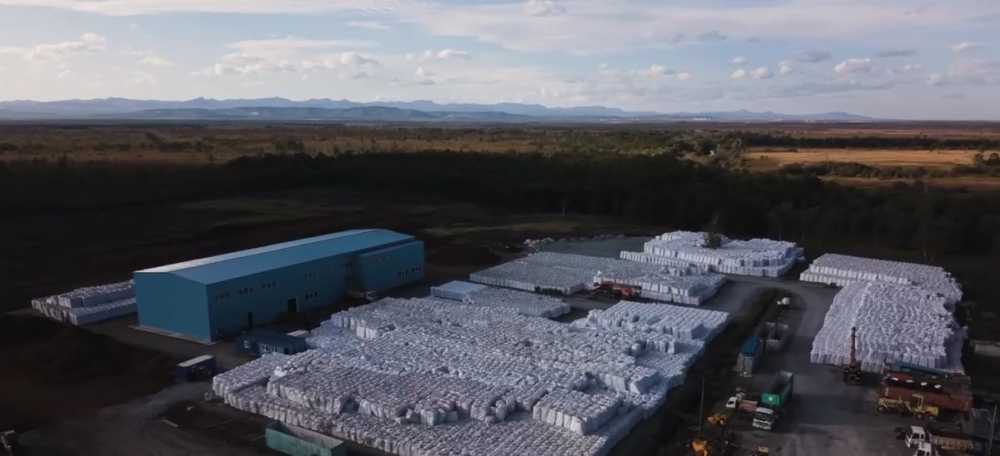
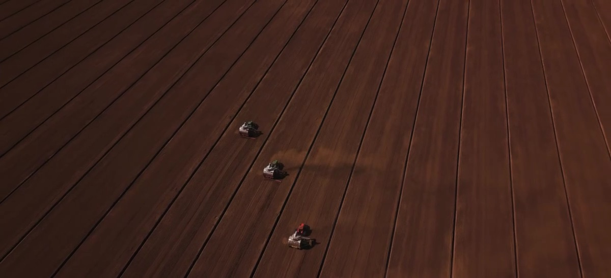
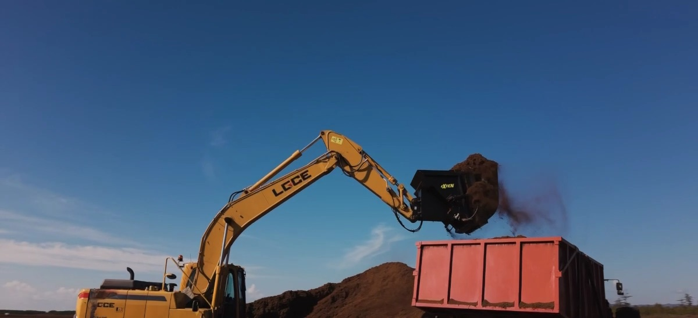
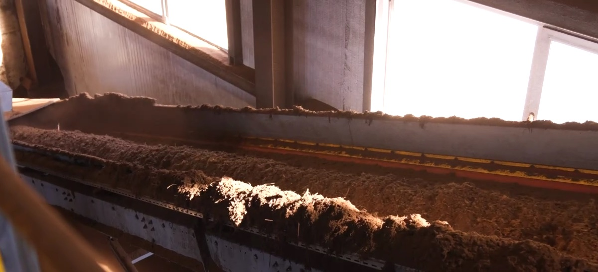
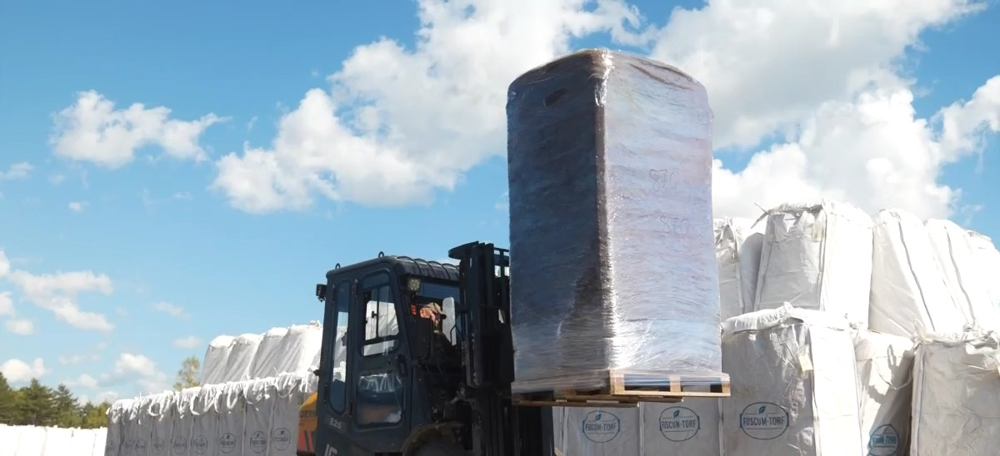
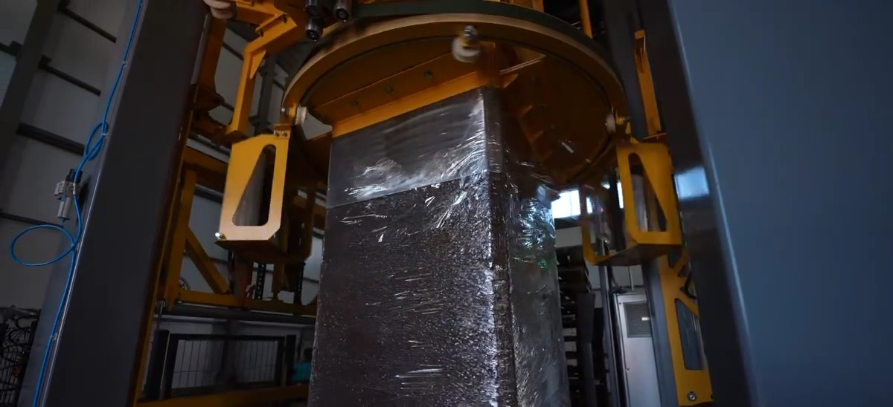
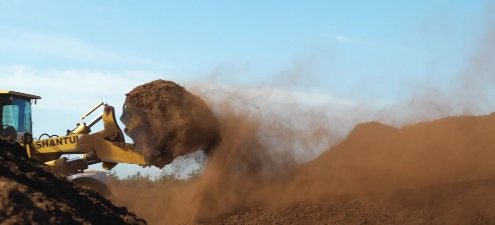

Анивский район, Сахалинская область
Сфагновый торф с Сахалина
Добываем и перерабатываем торф на собственном месторождении: полный цикл от поля до упаковки.
- Торфяные поля
- 720 га
- Запасы торфа
- 15,7 млн м³
- Производство в год
- 250 000 м³
- До порта Корсаков
- 30 км
О компании
Мы сами добываем торф на Сахалине, сами его перерабатываем и сами упаковываем.
ООО «Фускум-Торф» работает на юге Сахалина с 2018 года. Учредитель компании, ООО «Восток-Курилы», занимается гражданским строительством с 2007 года.
Мы разрабатываем участок «Средний» Озерецко-Песочного месторождения. Он находится в Анивском районе, в 2 км от села Мицулевка и в 10 км от Южно-Сахалинска.
Здесь всё построено под торф: подъездная дорога, мост через реку Средняя, линия электропередачи и завод с собственной производственной линией.

Производство
От поля до порта
-

Поля
Торфяные поля площадью 720 га готовит и обслуживает наша спецтехника.
-

Добыча
Сезон добычи идёт с июня по сентябрь.
-

Переработка
На заводе торф перерабатывают и разделяют на фракции.
-

Упаковка и отгрузка
Биг-бэги на поддонах идут автотранспортом в порт Корсаков, дальше морем.
Продукт
Сфагновый торф низкой степени разложения
| Степень разложения | ≤ 20% (H2) |
|---|---|
| Органическое вещество | ≥ 90% |
| Зольность | ≤ 10% |
| Кислотность, pH (KCl) | 2,5–3,5 |
| Кислотность, pH (H₂O) | 3,0–4,1 |
| Влажность | 45–60% |
| Влагоёмкость | ≥ 600% |
| Насыпная плотность (сухое вещество) | ≤ 150 кг/м³ |
| Электропроводность | ≤ 0,18 мСм/см |
| Пористость | до 95% |
| Древесные включения | ≤ 1% |

Фракции
- 0–10 мм
- 0–40 мм
- 10–20 мм
- 20–40 мм
Упаковка
Биг-бэг 1000 × 1200 × 2000 мм, объём 5 м³, вес 900 кг.
Применение
Где работает наш торф
Растениеводство
Выращивание в теплицах и в открытом грунте.
Субстраты и питательные среды
Высокая аэрация, пористость до 95%.
Удобрение и мульчирование
Гуминовые кислоты стимулируют рост растений, а затраты на полив и минеральные удобрения снижаются.
Прессованные изделия
Блоки, таблетки и гранулы.
Сорбент
Сбор нефтепродуктов при разливах.
Подстилка для животных
Подстилка первого класса для животноводства.

Сезон добычи: июнь — сентябрь
История
Как строился проект
- 2018Старт проекта, выбор торфяника, исследование ресурсов
- 2019Детальное исследование качества торфа, разрешения и лицензия
- 2020Закупка техники для подготовки полей, строительство моста через реку
- 2021Строительство дороги к торфянику
- 2022Проектирование разработки, подготовка полей
- 2023Подготовка площадки под завод, заказ производственной линии
- 2024Первый сезон добычи, строительство здания завода
- 2025Запуск завода и производственной линии
Контакты
Свяжитесь с нами
693017, Сахалинская область, Анивский район, тер. Фускум-Торф, ул. Недропользователей, зд. 1
- Полное название
- ООО «Фускум-Торф»
- Директор
- Котляр Александр Николаевич
- ИНН
- 6504022808
- КПП
- 650401001
- ОГРН
- 1186501008616